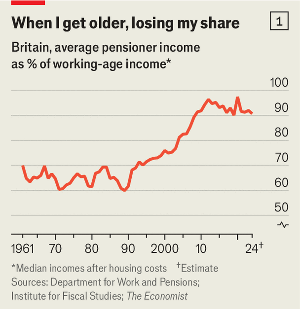
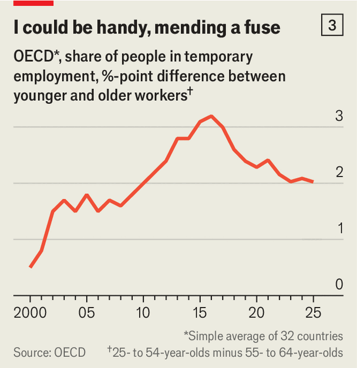
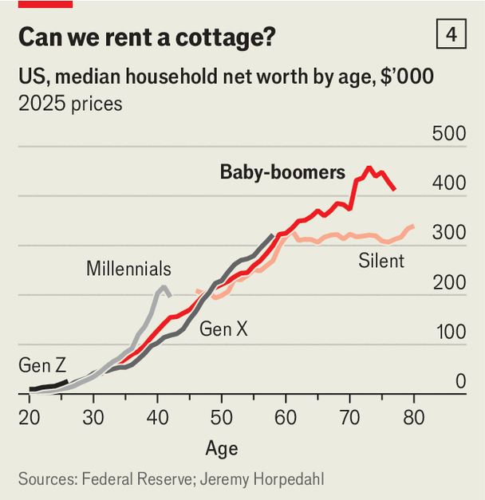
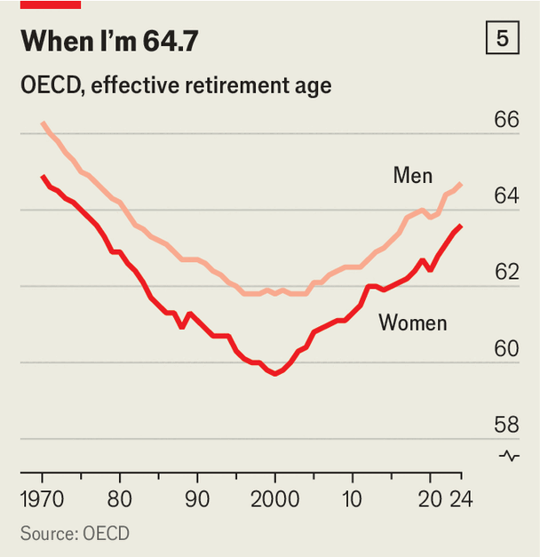
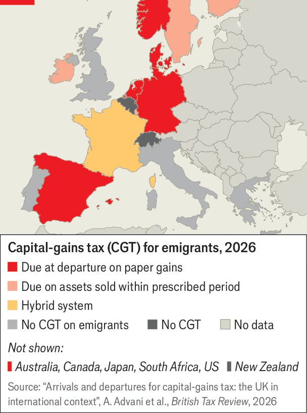
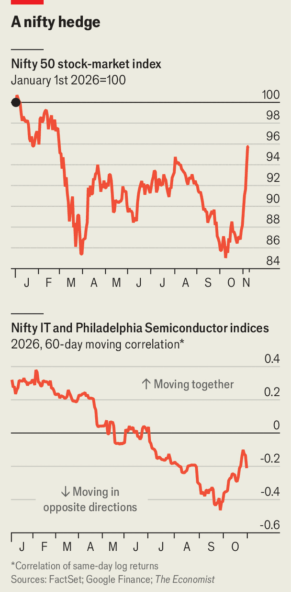

Finance & economics
A new history of confiscation sheds light on modern economic warfare
For boomers, economic boom times are over
Across the rich world, the geriatric share of income and wealth is ebbing





A new history of confiscation sheds light on modern economic warfare
Italy’s proposed exit tax causes ructions

A new history of confiscation sheds light on modern economic warfare
Where to find the anti-AI trade

A new history of confiscation sheds light on modern economic warfare
The future of Trumponomics: compromise or failure
A new history of confiscation sheds light on modern economic warfare
Lessons from a miserable month for hedge funds
The worse chipmakers do, the better Indian equities perform